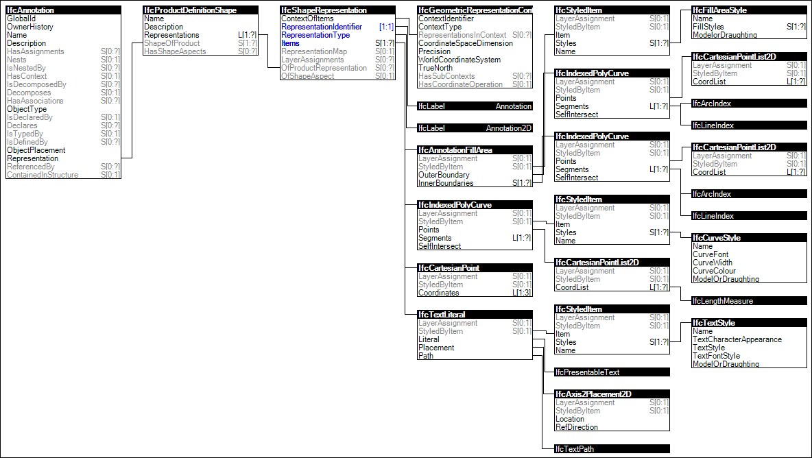

Link to this page
Link to this pageThe 'Annotation 2D Geometry' is used, when the representation of an annotation includes specific drafting representation elements, in particular areas for hatching and text.
The following attribute values for the IfcShapeRepresentation holding this geometric representation shall be used:
Figure 62 illustrates an instance diagram.
 |
Figure 62 — Annotation 2D Geometry |